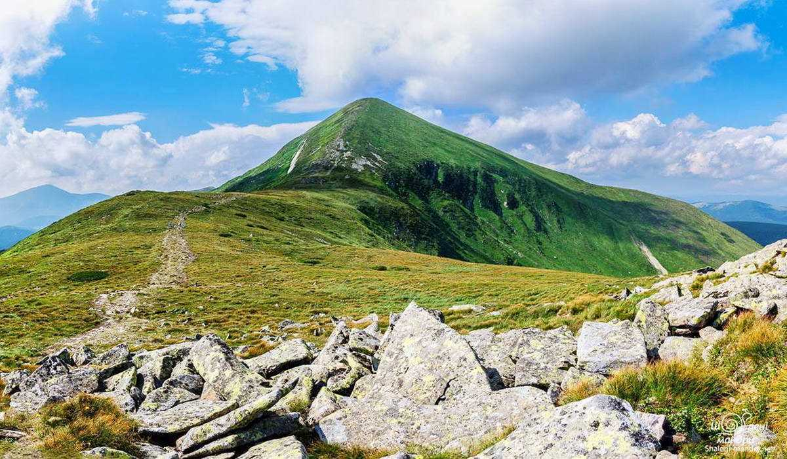

Українські Карпати — це унікальний край, де гірські вершини поєднуються з густими лісами, бурхливими річками та багатовіковими гуцульськими традиціями. Ідеальне місце для активного відпочинку та відновлення внутрішньої гармонії.

Плануєте похід? Дізнайтеся про найкращі маршрути, правила безпеки та еко-станції на офіційному ресурсі:
Дізнатися більше про Карпати